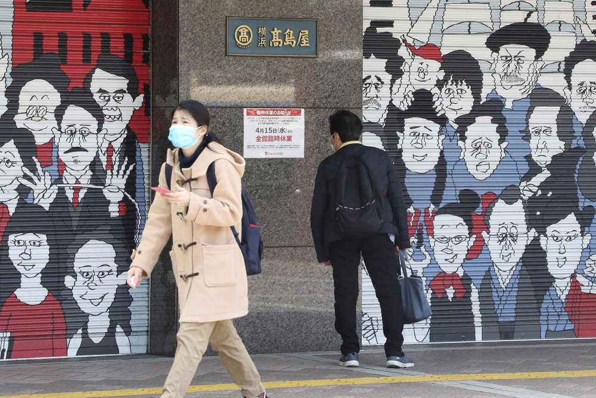

-
Como a pandemia impacta de maneira mais severa a vida das mulheres

Relatórios apontam que crise causada pelo coronavírus aumentará as desigualdades e violência contra as mulheres em todos os países. Além disso, 70% de todos os profissionais da saúde no mundo são mulheres, o que as expõe de maneira direta à Covid-19.Embora os homens representem entre 60% e 80% dos mortos pela Covid-19, as mulheres são afetadas de maneira mais severa pelo novo coronavírus (Sars-CoV-2). Elas estão mais expostas ao risco de contaminação e às vulnerabilidades sociais decorrentes da pandemia, como desemprego, violência, falta de acesso aos serviços de saúde e aumento da pobreza.
Essa é a conclusão do relatório "Mulheres no centro da luta contra a crise Covid-19", divulgado no final de março pela ONU Mulheres, entidade da Organização das Nações Unidas para igualdade de gênero e empoderamento.
Em resumo, segundo o estudo, a pandemia afeta mais as mulheres porque:
- 70% dos trabalhadores de saúde em todo o mundo são mulheres, fato que as expõe a um maior risco de infecção pelo novo coronavírus;
- com o isolamento, os índices de violência doméstica e feminicídio têm aumentado no mundo – como as mulheres estão confinadas com seus agressores e distantes do ciclo social, riscos para elas são cada vez mais elevados;
- entre os idosos, há mais mulheres vivendo sozinhas e com baixos rendimentos;
- A ONU Mulheres estima que, dentre a população feminina mundial, as trabalhadoras do setor de saúde, as domésticas e as trabalhadoras do setor informal serão as mais afetadas pelos efeitos da pandemia de coronavírus.
- mulheres também são maioria em vários setores de empregos informais, como trabalhadores domésticos e cuidadores de idosos;
- com a pandemia, mulheres têm de se dividir entre diversas atividades, como as seguintes: emprego fora de casa, trabalhos domésticos, assistência à infância (cuidado com filhos), educação escolar em casa (já que as escolas estão fechadas) e assistência a idosos da família
- antes da Covid-19, mulheres desempenhavam três vezes mais trabalhos não remunerados do que os homens; com o isolamento, a estimativa é que este número triplique;
- mulheres não estão na esfera de poder de decisão na pandemia: elas são apenas 25% dos parlamentares em todo o mundo e menos de 10% dos chefes de Estado ou de Governo;
- e, no setor têxtil, um dos mais afetados da indústria em todo mundo e paralisado por causa do trabalho temporário de lojas, as mulheres são três quartos dos trabalhadores no mundo.